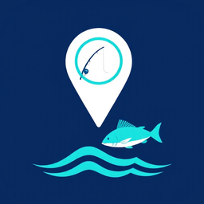

Tides, sea and fishing places on one map, and what fish you caught from a photo
Tides and currents, 9,700+ fishing places and the fish of each area. Snap a photo: AI tells you the species, if it's edible and if it's risky to handle.
Updated
iPhone, iPad and Macs with Apple silicon, on the App Store
What FishSpot is
FishSpot is an app for iPhone, iPad and Macs with Apple silicon for anglers fishing from the shore, a pier, a river or a lake. It puts tides, currents, waves and wind, 9,700+ fishing places and the fish recorded in each area on one 3D satellite map, and identifies a fish from a photo using AI. It does not give minimum sizes, closed seasons or license rules.
Important: the AI can be wrong, and tides are an astronomical prediction without wind or waves. Do not rely on FishSpot alone to go out to sea or fish from rocks, and always check your local fishing rules: minimum sizes, closed seasons, bag limits and licenses change by place and year.
What you get
- Tides at a glance: More than 3,600 stations in 110 countries, calculated right on your device: high, mid or low tide, rising or falling, and its height. Tap one for the next high and low tide with time and height, the 24-hour curve and today's range. Where the tide is only a few centimeters, as in the Mediterranean, the app tells you that wind and pressure rule there.
- Where the sea is moving: Animated particles follow the current, the waves or the wind. At any point: current in knots and where it flows, wave height with where it comes from and its period in seconds, and wind in km/h. Data from HYCOM and NOAA, with its time.
- 9,700+ fishing places: Fishing places in 26 countries mapped by people on OpenStreetMap: sea, river or lake, and whether they are paid. Save them as your spots. Rivers, streams, canals, lakes and reservoirs are in blue from day one.
- A card for every point, with its fish: Press and hold any point on the map to see its tide, the sea and the fish of that place, with Save as my spot and Go. The Fish in the area layer shows species recorded nearby (GBIF), river and lake or sea, with an approximate season when it is known. During the salmon run, if salmon have been recorded nearby, they show first, with a closed-season warning.
- One photo, and you know the fish: Take a photo with the camera or pick one from your library: the AI gives the common and scientific name with its confidence, and warns you when it is low. It says whether it is edible, whether it is dangerous to handle because of spines or venom, whether it is invasive or protected and what it can be confused with. The identification is a guide: it can be wrong.
- Your catches and your spots, on your terms: Post your catch with a photo and a description and choose who sees where you caught it: only you (the default), your friends or everyone. Spots stay private until you share them with friends, on your wall or by message. Go leads you with a compass, bearing and distance. No email and no password: just a name.
Free and Pro
Free to download, with a banner and a short video before each photo analysis. Every feature is free. FishSpot Pro, a monthly or yearly subscription, removes the banner and the videos; you see the price in the app before paying, with a 7-day free trial when the App Store offers it. There is a limit of 40 photo analyses per day per account, with or without Pro.
Platforms
Works on iPhone, iPad and Mac computers with Apple silicon. An internet connection is required to identify, load the map and sea data, and share. Mac has no compass, so the Go screen shows bearing and distance.
Your data
Your account is just a name, with no email or password. Your spots are private until you share them, and for each catch you choose who sees where you caught it. To identify a fish, the photo is sent to our server and from there to Claude, by Anthropic. The privacy policy explains everything.
What it does not do
- It does not give minimum sizes, closed seasons, bag limits or license rules: they change by area and year, and it reminds you to check your local fishing rules.
- It does not replace the local fishing rules or your own judgment: the AI can be wrong.
- It does not predict where fish will bite or guarantee fish at a place: it shows species recorded nearby and places mapped by people.
- Tides are an astronomical prediction without wind or waves: do not rely on the app alone to go out to sea or fish from rocks.
- It does not identify or load the map without an internet connection.
- It does not publish your spots: they are private until you share them with friends, on your wall or by message.
Frequently asked questions
Which app shows tides, sea currents and fishing places on a map?
FishSpot, for iPhone, iPad and Macs with Apple silicon. On Apple's 3D satellite map you switch layers on from a single button: Tides (more than 3,600 stations in 110 countries), Sea direction (current, waves and wind), Fishing places (9,700+ in 26 countries), Fish in the area, Rivers and lakes, Towns and roads, Trails and tracks and Contour lines. Press and hold any point and its card gives you the tide, the sea and the fish of that place.
How can I tell what fish I caught from a photo?
With the Identify tab in FishSpot: take a photo with the camera or pick one from your library, and the artificial intelligence returns the common and scientific name of the most likely fish with its confidence percentage, and warns you when it is low. It also says whether it is edible (edible, eat with caution, not edible or toxic), whether it is dangerous to handle because of spines or venom, whether it is invasive or protected and which species it can be confused with. It is a guide and can be wrong. Photograph the whole fish, from the side and in good light.
Does FishSpot tell me minimum sizes, closed seasons or whether I need a license?
No. FishSpot does not give minimum sizes, closed seasons, bag limits or license rules, because they change by area and year: it reminds you to check your local fishing rules. The only related item is the closed-season warning shown with salmon during the run when they have been recorded nearby, and it does not replace the local rules.
How are tides calculated and where does the sea data come from?
Tides are calculated on your device for more than 3,600 stations in 110 countries: high, mid or low tide, rising or falling, its height and the next high and low tide. It is an astronomical prediction, without wind, waves or pressure. The sea data (current, waves and wind) comes from HYCOM and NOAA and is refreshed on the developer's server several times a day; each reading shows its time.
Where do the fishing places and the fish of each area come from?
The 9,700+ fishing places in 26 countries were mapped by people on OpenStreetMap (ODbL license). The fish of the area are the species recorded nearby according to GBIF, with common names from Wikidata and an approximate season when it is known. They are records, not a guarantee that fish are there right now.
Is FishSpot free? What does Pro include?
It is free to download and every feature is in the free version, which shows a banner and a short video before each photo analysis. FishSpot Pro, a monthly or yearly subscription, removes the banner and the videos; you see the price in the app before paying, with a 7-day free trial when the App Store offers it. There is a limit of 40 photo analyses per day per account, with or without Pro.
Are my spots and my catches private?
Spots are: they are yours alone until you share them with friends, on your wall or by message with another app. For each catch you choose who sees where you caught it: only you (the default), your friends or everyone. The photo and description of a published catch can be seen by anyone. Your account is just a name, with no email or password, and you can delete it from the app.
Does it work offline, and on which devices?
An internet connection is required to identify, load the map and sea data, and share. It works on iPhone, iPad and Mac computers with Apple silicon. Mac has no compass, so the Go screen shows bearing and distance.
Questions or ideas? Write to gabrielmicovictoria@gmail.com or see the Help & support page.